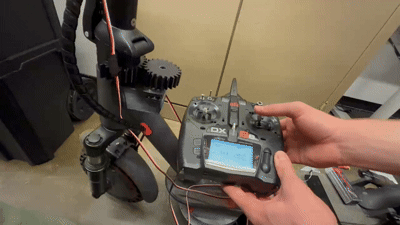
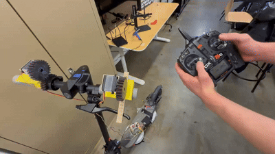
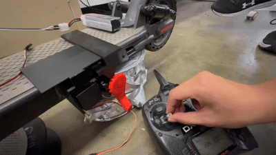
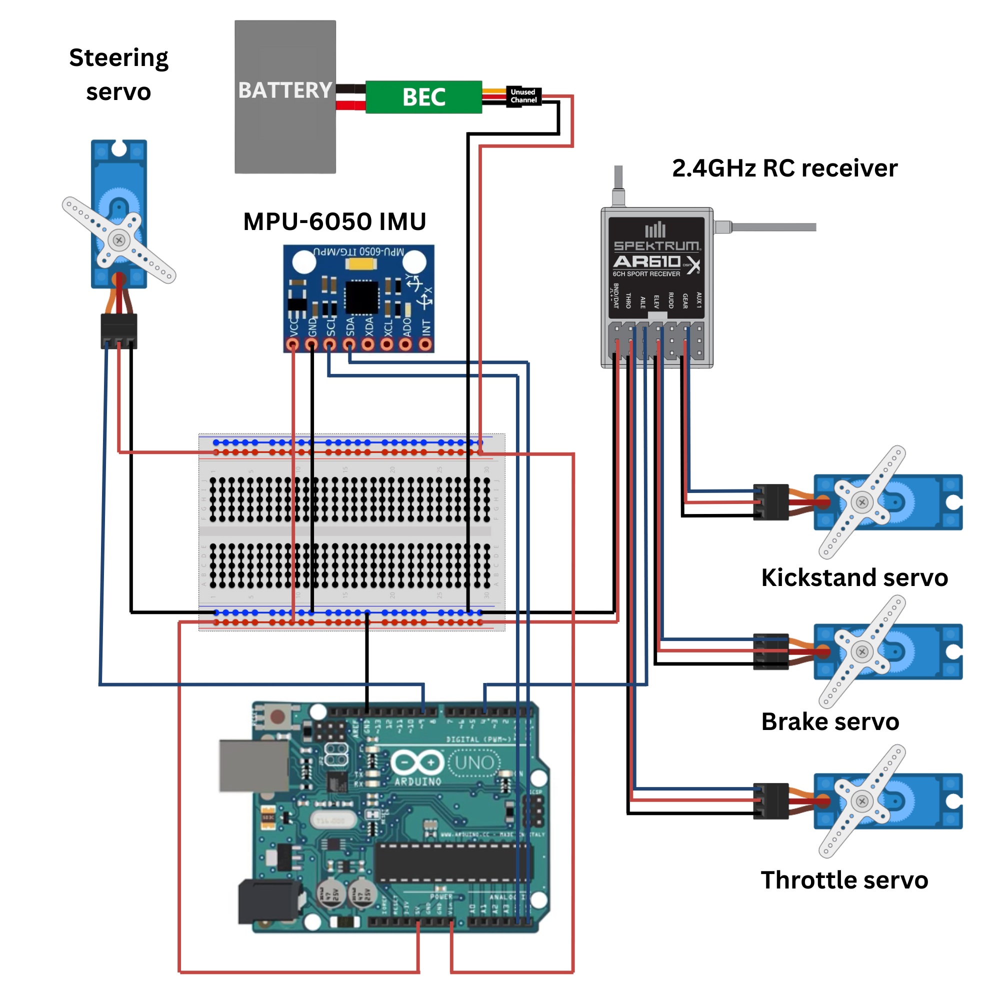

Problem & Mission
Shared electric scooters are widely deployed in urban environments, yet fleet logistics remain highly manual. Scooters must be physically located, collected, charged, and repositioned, resulting in high operational costs, sidewalk clutter, and inconsistent availability.
The mission of this project was to establish a functional foundation for future autonomous fleet repositioning by demonstrating that a standard two-wheel scooter can maintain upright stability and respond to remote commands without a rider onboard.
System-Level Solution
The prototype modifies a consumer electric scooter with modular add-on components that integrate sensing, control, and mechanical actuation. The system executes steering, throttle, braking, and kickstand deployment while maintaining balance through IMU-based feedback control.
- Real-time balance sensing using an IMU
- Servo-driven mechanical actuation of rider controls
- Wireless command input via handheld RC transmitter
- Modular mounting architecture enabling rapid iteration
How the System Works
Steering Control
A dedicated steering servo mechanically actuates the front steering column, enabling directional control under remote input while maintaining balance.

Throttle & Braking
Independent servos interface directly with the scooter's throttle and braking mechanisms, allowing smooth acceleration and controlled deceleration through remote commands.

Kickstand Deployment
A servo-driven kickstand mechanism allows the scooter to transition between parked and operational states without manual intervention.

Live Demonstration
The following demonstration shows the fully integrated system maintaining upright balance while responding to remote steering, throttle, braking, and kickstand commands.
Control & Electronics Architecture
The control system integrates inertial sensing, wireless command input, and servo actuation through a centralized microcontroller. Balance feedback from the IMU informs stabilization logic, while RC signals provide real-time operator input.
- MPU-6050 IMU for orientation and angular velocity sensing
- Arduino-based controller for signal processing and actuation
- 2.4 GHz RC receiver for wireless command input
- Dedicated power regulation to ensure stable servo operation

Engineering Challenges
- PID tuning for balance stability in the absence of rider-induced damping
- Mechanical packaging within a constrained scooter frame
- IMU noise sensitivity and signal filtering
- Servo backlash, gear meshing, and alignment tolerances
Results & Key Takeaways
The completed prototype successfully demonstrated riderless self-balancing behavior and coordinated remote actuation of steering, throttle, braking, and kickstand mechanisms. While not fully autonomous, the system validates core concepts required for future autonomous scooter repositioning.
- Demonstrated stable balance under remote operation
- Validated mechanical actuation of rider controls
- Established a scalable platform for further autonomy development